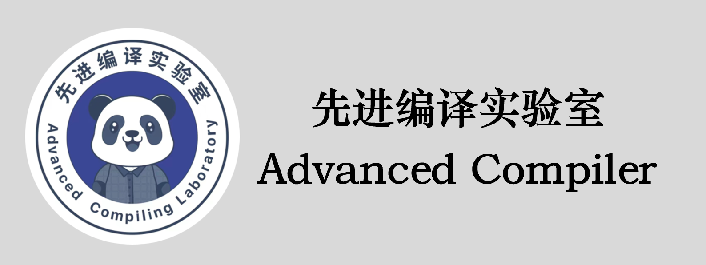

先进编译实验室编著的《程序性能优化理论与方法》（实操课程）以及《深度学习编译器设计》两本书籍所配套的文字课程、PPT课件以及配套code将陆续进行更新……同时也欢迎大家关注先进编译实验室的B站账号、知乎，添加微信小助手，加入交流群进行讨论学习，共同进步！！！
先进编译实验室团队长期致力于高性能计算、编译技术、程序优化等方向的科研工作。先后承研国家重大专项、核高基专项、973、863、自然科学基金等相关课题，在高性能计算、并行程序设计与优化、国产自主可控等相关领域已经形成了若干领先成果，曾获国家科技进步一等奖、省部级科技进步一等奖等奖项。在国内外超算及程序优化的竞赛中，多次获PAC全国并行应用挑战赛优化金奖、银奖、铜奖，ASC世界大学生超级计算机竞赛一等奖、二等奖、卓越奖，CPC国产并行应用挑战赛银奖、铜奖，IPCC-ACM中国国际并行计算挑战赛二等奖等。
本书及课程从计算机体系结构、编译系统、操作系统、作业管理等多角度，对程序实现中的算法、数据结构、程序设计语言特性、资源占用及程序运行过程等多维度，全面探讨程序性能优化的理论和方法。 本书适用于具备一定程序设计基础并致力于程序性能优化的程序设计人员，也可以作为高等教育计算机程序设计的学习使用，还可作为从事性能优化专业技术人员的参考书。
| 章节名称 | 视频课程 | PPT |
|---|---|---|
| 1 LLVM整体设计 | bilibili | 知乎 |
| 2 Clang前端 | bilibili | 知乎 |
| 3 IR优化 | bilibili | |
| 4 代码生成（上） | bilibili | |
| 5 代码生成（下） | bilibili |
| 章节名称 | 视频课程 | 课件文章 |
|---|---|---|
| 1 循环展开和压紧 | bilibili | |
| 2 循环合并 | bilibili | |
| 3 循环分布 | bilibili | |
| 4 循环交换 | bilibili | |
| 5 循环不变量外提 | bilibili | |
| 6 循环分段 | bilibili | |
| 7 循环分块 | bilibili | |
| 8 循环分裂 | bilibili | |
| 9 循环倾斜 | bilibili |
| 章节名称 | 视频课程 | 课件文章 |
|---|---|---|
| HIP代码自动生成工具C2HIPC | bilibili |
深度学习编译是一个博大精深且正在快速发展的领域，下面内容旨在分享先进编译实验室团队在学习深度学习编译领域过程中的对顶会论文、主流编译器等的学习心得。

{kind=link}